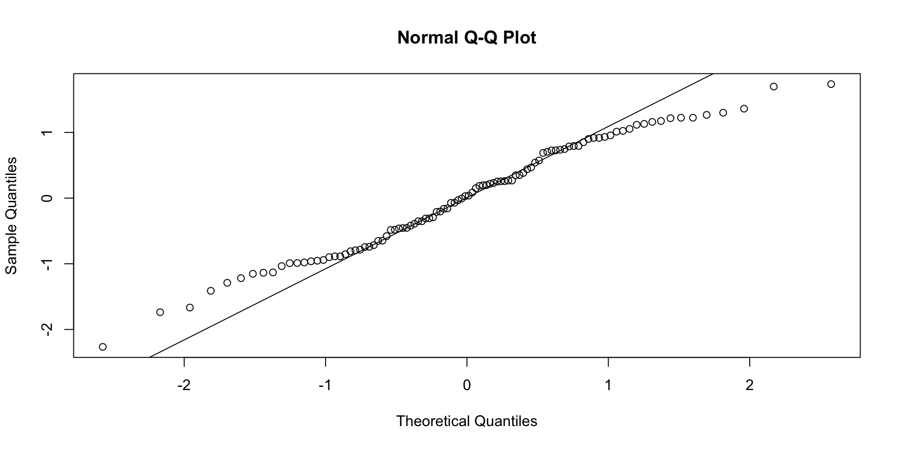

One Sample t-test
data: spd
t = -30.475, df = 14, p-value = 3.359e-14
alternative hypothesis: true mean is not equal to 8
95 percent confidence interval:
3.772004 4.327996
sample estimates:
mean of x
4.05 程式設計與應用
第十八章：統計檢定
劉昱佑
實踐大學
2026-06-07
向資料提出是非題
檢定的邏輯
每個古典檢定都遵循同一套劇本：設定虛無假設 \(H_0\)，計算一個在 \(H_0\) 下分布已知（第十七章）的統計量，回報 p 值——若 \(H_0\) 為真，出現至少這麼極端結果的機率。
Note
怎麼讀 p 值。 p 很小（慣例上 \(< 0.05\)）代表資料在 \(H_0\) 下很令人意外，因此拒絕它。p 很大永遠不能證明 \(H_0\)，只能說資料與它相容。
以下每個檢定都回傳 htest 類別的物件——同樣的結構，同一套閱讀技巧。
單樣本 t 檢定
某型輪胎的失效時間平均值是否異於基準？
輸出打包了統計量、自由度、p 值、信賴區間與樣本平均——可用 $p.value、$conf.int 取出。
雙樣本與成對 t 檢定
Welch Two Sample t-test
data: b and d
t = -1.3553, df = 16.258, p-value = 0.1938
alternative hypothesis: true difference in means is not equal to 0
95 percent confidence interval:
-0.7680672 0.1685067
sample estimates:
mean of x mean of y
4.453077 4.752857
Paired t-test
data: before and after
t = 2.8642, df = 4, p-value = 0.04574
alternative hypothesis: true mean difference is not equal to 0
95 percent confidence interval:
0.1347441 8.6652559
sample estimates:
mean difference
4.4 配對消除了個體間差異——測量天然成對時，務必說出來。
比較變異數與多組平均
F test to compare two variances
data: b and d
F = 1.9514, num df = 12, denom df = 6, p-value = 0.4237
alternative hypothesis: true ratio of variances is not equal to 1
95 percent confidence interval:
0.3636523 7.2755648
sample estimates:
ratio of variances
1.951447 超過兩組時，單因子變異數分析（ANOVA）推廣了 t 檢定：
Df Sum Sq Mean Sq F value Pr(>F)
Tire_Type 5 279.1 55.83 12.75 1.88e-08 ***
Residuals 60 262.7 4.38
---
Signif. codes: 0 '***' 0.001 '**' 0.01 '*' 0.05 '.' 0.1 ' ' 1p 值小代表某些平均不同；接著用 TukeyHSD(fit) 找出是哪幾對。
常態性與分布檢定
Shapiro-Wilk normality test
data: z
W = 0.97928, p-value = 0.1167
Asymptotic one-sample Kolmogorov-Smirnov test
data: z
D = 0.066739, p-value = 0.7646
alternative hypothesis: two-sided
Q–Q 圖是視覺搭檔：點貼著直線支持常態——還能看出偏離發生在哪裡。
無母數檢定
常態性可疑或資料是等級時，換上不依賴分布的對應檢定：
| 母數 | 無母數 |
|---|---|
| 單／雙樣本 t | wilcox.test() |
| 單因子 ANOVA | kruskal.test() |
| 成對 t | wilcox.test(..., paired = TRUE) |
Wilcoxon rank sum exact test
data: b and d
W = 27, p-value = 0.1505
alternative hypothesis: true location shift is not equal to 0
Kruskal-Wallis rank sum test
data: Time_To_Failure by Tire_Type
Kruskal-Wallis chi-squared = 40.11, df = 5, p-value = 1.419e-07用一點檢定力換來大量穩健性。
比例與二項檢定
射門員 974 次嘗試成功 787 次。真實成功率是 80% 嗎？
1-sample proportions test with continuity correction
data: 787 out of 974, null probability 0.8
X-squared = 0.34195, df = 1, p-value = 0.5587
alternative hypothesis: true p is not equal to 0.8
95 percent confidence interval:
0.7815455 0.8320008
sample estimates:
p
0.8080082
Exact binomial test
data: 787 and 974
number of successes = 787, number of trials = 974, p-value = 0.5482
alternative hypothesis: true probability of success is not equal to 0.8
95 percent confidence interval:
0.7818429 0.8322959
sample estimates:
probability of success
0.8080082 給 prop.test() 兩組計數就是比較兩個比例——一行完成 A/B 測試。
表格資料：卡方與夥伴
兩個類別變數有關聯嗎？
outcome
group yes no
treat 45 30
control 15 40
Pearson's Chi-squared test with Yates' continuity correction
data: tbl
X-squared = 12.39, df = 1, p-value = 0.0004316
Fisher's Exact Test for Count Data
data: tbl
p-value = 0.0003306
alternative hypothesis: true odds ratio is not equal to 1
95 percent confidence interval:
1.776695 9.160997
sample estimates:
odds ratio
3.954904 - 經驗法則：期望次數低於 5 → 改用
fisher.test()。 mcnemar.test()處理成對的類別資料（同一群受試者的前後比較）。
選擇檢定的地圖
- 單一數值樣本對照基準：
t.test(x, mu=)；非常態 →wilcox.test。 - 兩個數值樣本：獨立 →
t.test(x, y)；成對 →paired=TRUE；非常態 →wilcox.test。 - 三組以上：
aov()→TukeyHSD()；非常態 →kruskal.test。 - 比例：
prop.test/binom.test。 - 兩個類別變數：
chisq.test/fisher.test。
在相信 p 值之前先檢查假設（常態、等變異、獨立）——並記住統計顯著不等於實務重要。
版權聲明
版權聲明。 本教材改編自 Joseph Adler 所著 R in a Nutshell: A Desktop Quick Reference（第二版，O’Reilly Media）。所有權利均由原作者與出版者保留。
僅供非商業用途。 本教材嚴格限定用於教育目的，不得用於商業獲利。
適當標註出處。 任何對本教材的重製、散布或使用，都必須適當標註原始出處。

R in a Nutshell: A Desktop Quick Reference